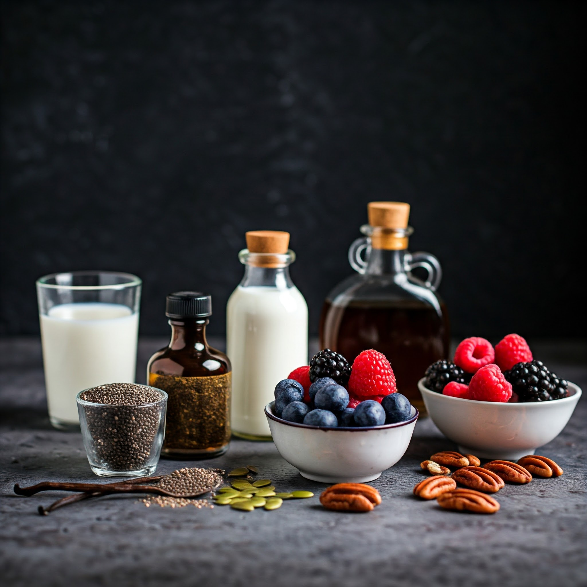

Chia Pudding Recipe


Ingredients
- 1/4 cup chia seeds
- 1 cup almond milk (or any milk of your choice)
- 1 tablespoon maple syrup (or honey)
- Fresh fruits and nuts for topping (optional)
Instructions
- In a bowl, combine chia seeds, almond milk, maple syrup, and vanilla extract.
- Stir well to combine.
- Let the mixture sit for about 5 minutes, then stir again to prevent clumping.
- Cover the bowl and refrigerate for at least 2 hours or overnight.
- Before serving, stir the pudding again and top with fresh fruits and nuts if desired.